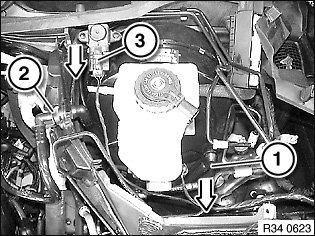

Vacuum Brake Booster Check Valve: Service and Repair
34 33 051 Removing and installing/replacing non-return valve for brake boosterNecessary preliminary tasks:
^ Read and comply with General Information.
^ Remove hydraulic unit
Important!
- If a rubber vacuum hose is fitted, it can be replaced individually.
- If a plastic vacuum line is fitted, it can only be replaced as a single unit together with the non-return valve.
Note:
Before beginning work, fully press the brake pedal several times to reduce the vacuum pressure in the brake booster. This makes it easier to remove the non-return valve.

Remove non-return valve (1) from brake booster.
Unlock quick-connect coupling (2) and detach vacuum line.
If necessary, disconnect plug connection (3) and remove differential pressure sensor.
Feed out vacuum line.
Installation:
Check sealing ring in brake booster and replace if necessary.